คู่มือใช้งานเครื่องมือ · ระดับ Free
ตรวจระบบอากาศอัด
Compressed Air System Tool
FREE
สำหรับช่างเทคนิคที่เพิ่งเริ่มงาน — อ่านแล้วทำตามได้เอง
ใช้เวลาฝึกประมาณ 60 นาที
เคสตัวอย่าง: โรงงาน A เครื่องอัดอากาศสกรู 75 kW ความดัน 7 bar
อ.หนึ่ง กลับทวี / Aj. Nueng Klubtavee
tripleeenergytools.com
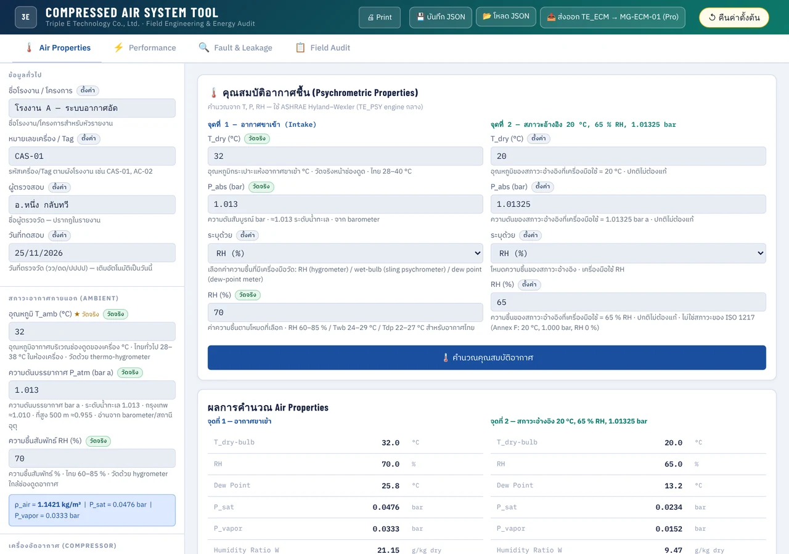
หน้าจอเครื่องมือ — เปิดได้จากเมนู Free ของเว็บไซต์
รุ่นเครื่องมือ: Free commit 735c17c · จับภาพ 17 พ.ย. 2569 · คู่มือ Rev02
เครื่องมือนี้ตอบคำถามอะไร
คู่มือใช้งาน · ระบบอากาศอัด (Compressed Air System Tool) · ระดับ Free
2 / 35
| คำถามหน้างาน | ใช้ส่วนไหน | เคสโรงงาน A ได้ |
|---|---|---|
| เครื่องอัดอากาศผลิตลมได้จริงเท่าไร | แท็บ Performance → Pump-Up Test | 11.976 m³/min |
| ใช้ไฟกี่ kW ต่อลม 1 m³/min (SEC) ดีหรือแย่ | แท็บ Performance → Direct Method | 6.64 — ACCEPTABLE |
| มีหลายเครื่อง เดินเครื่องไหนก่อนถึงประหยัด | แท็บ Performance → Sequencing | 87.6 kW → 81.1 kW |
| ลมรั่วทั้งระบบกี่ % เสียเงินปีละเท่าไร | แท็บ Fault & Leakage → Field Leak Test | 11.8 % · 239.3 พันบาท/ปี |
| ท่อเล็กไปไหม ความดันตกตรงไหน | Pressure Drop · Pressure Map | ตกรวม 1.000 bar |
| เครื่องมีอาการผิดปกติ ต้องตรวจอะไรก่อน | Fault Diagnosis Tree | 8 อาการ พร้อมสาเหตุและวิธีแก้ |
| ควรทำมาตรการไหนก่อน คืนทุนกี่ปี | แท็บ Field Audit → ECM Priority Matrix | ซ่อมรั่ว คืนทุน 0.2 ปี |
💡 เคล็ดลับ
ทำตามลำดับแท็บจากซ้ายไปขวา — แท็บหลังดึงค่าจากแท็บก่อนหน้าให้อัตโนมัติ
แผนที่หน้าจอ
คู่มือใช้งาน · ระบบอากาศอัด (Compressed Air System Tool) · ระดับ Free
3 / 35
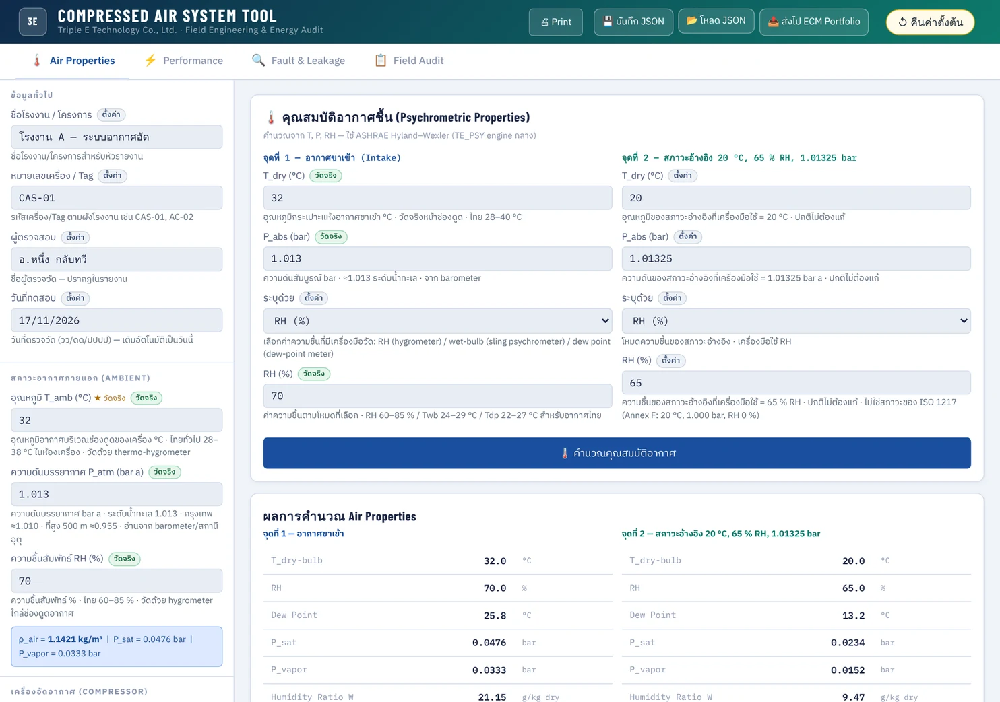
1
2
3
4
5
6
7
1
พิมพ์ · บันทึก/โหลด JSON · ส่งไป ECM Portfolio
2
คืนค่าตั้งต้น — ล้างทุกช่องกลับเป็นตัวอย่าง
3
แท็บ 4 แท็บ: คุณสมบัติอากาศ · สมรรถนะ · รั่ว/ความดันตก · ตรวจหน้างาน
4
แถบซ้าย: ข้อมูลทั่วไปของงาน
5
แถบซ้าย: สภาวะอากาศรอบเครื่อง
6
พื้นที่ทำงานของแท็บที่เลือก — กรอกแล้วกดปุ่มสีน้ำเงิน
7
ผลลัพธ์ขึ้นใต้ปุ่มคำนวณ
💡 เคล็ดลับ
แถบซ้ายใช้ร่วมกันทุกแท็บ — กรอกแถบซ้ายให้ครบก่อน แล้วค่อยไล่ทีละแท็บ
เปิดบนมือถือ สลับภาษา และป้ายสีข้างชื่อช่อง
คู่มือใช้งาน · ระบบอากาศอัด (Compressed Air System Tool) · ระดับ Free
4 / 35
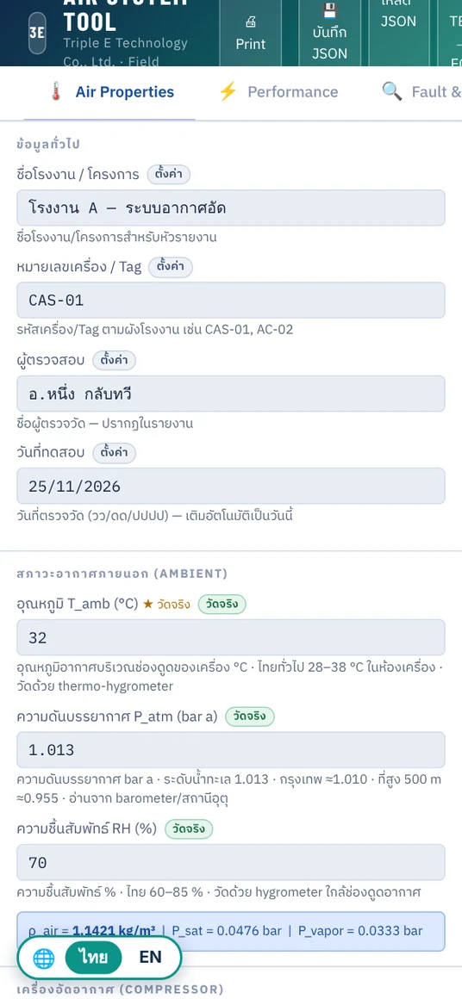
ใช้บนมือถือหน้างานได้ — แถบซ้ายจะย้ายขึ้นไปอยู่ด้านบน ตามด้วยพื้นที่ทำงาน
ปุ่ม 🌐 ไทย | EN ลอยอยู่ด้านล่าง กดสลับภาษาได้ ค่าที่กรอกไว้ไม่หาย
ป้าย วัดจริง = ต้องวัดหน้างาน · ออกแบบ = อ่านจากป้ายเครื่อง/แคตตาล็อก · ตั้งค่า = สมมติฐานที่เลือกเอง · คำนวณ = เครื่องมือเติมให้
ใต้ทุกช่องมีคำอธิบายสีเทา บอกเครื่องมือวัดและช่วงค่าปกติ
💡 เคล็ดลับ
จดค่าลงแบบฟอร์ม (สไลด์ 6) ที่หน้างานก่อน แล้วค่อยกรอกบนคอมพิวเตอร์ จะผิดน้อยกว่า
คำศัพท์ 6 คำที่ต้องรู้ก่อนเริ่ม
คู่มือใช้งาน · ระบบอากาศอัด (Compressed Air System Tool) · ระดับ Free
5 / 35
| คำ | ความหมายแบบสั้น | จำง่าย ๆ |
|---|---|---|
| FAD (m³/min) | ปริมาณลมที่เครื่องผลิตได้ นับเป็นปริมาตรอากาศที่ช่องดูด | "เครื่องนี้ทำลมได้กี่คิวต่อนาที" |
| SEC kW/(m³/min) | กำลังไฟฟ้าที่ใช้ ÷ ลมที่ผลิตได้ | ยิ่งต่ำยิ่งดี |
| bar g / bar a | bar g = ค่าที่เกจอ่านได้ · bar a = เกจ + ความดันบรรยากาศ (~1.013) | 7 bar g = 8.013 bar a |
| สภาวะอ้างอิง | อากาศ 20 °C · ความชื้น 65 % · 1.01325 bar ที่เครื่องมือใช้เทียบ | ทำให้เทียบข้ามวัน/ข้ามโรงงานได้ |
| Load / Unload | Load = อัดลมจ่ายเข้าระบบ · Unload = มอเตอร์หมุนแต่ไม่จ่ายลม | Unload = เสียไฟฟรี |
| Leak Rate (%) | ลมที่รั่วทิ้ง ÷ ลมที่ผลิตได้ | เครื่องมือให้แนวทาง ดี < 5 % |
💡 เคล็ดลับ
ตัวเลขเกณฑ์ที่ขึ้นป้าย "ค่าแนวทางของเครื่องมือ" เป็นแนวทางเบื้องต้น ไม่ใช่เกณฑ์ผ่าน/ตกตามมาตรฐาน
เตรียมข้อมูลก่อนลงหน้างาน (แบบฟอร์มจดค่า)
คู่มือใช้งาน · ระบบอากาศอัด (Compressed Air System Tool) · ระดับ Free
6 / 35
| ใช้ใน | ข้อมูลที่ต้องจด | เครื่องมือวัด / แหล่งข้อมูล | ค่าโรงงาน A |
|---|---|---|---|
| แถบซ้าย | อุณหภูมิ · ความชื้น รอบช่องดูด | เทอร์โม-ไฮโกรมิเตอร์ | 32 °C · 70 % |
| แถบซ้าย | กำลังไฟฟ้าขณะ Load เต็ม (kW) | Power meter 3 เฟส | 75 kW |
| แถบซ้าย | ความดันจ่าย · ป้ายเครื่อง (ความดันพิกัด · SEC) | เกจหน้าถัง · ป้ายเครื่อง/แคตตาล็อก | 7.0 bar g · 8.0 bar g · 6.5 |
| Pump-Up | ปริมาตรถัง+ท่อ · เวลาอัดจาก P₁ ถึง P₂ · อุณหภูมิถัง | ป้ายถัง · นาฬิกาจับเวลา · เทอร์โมมิเตอร์ | 3.0 m³ · 103 s · 0→7 bar g · 45 °C |
| Leak Test | ความดันเริ่ม · ความดันหลังจับเวลา · เวลา · ปริมาตรระบบ | เกจ · นาฬิกาจับเวลา | 7.0→5.6 bar g · 3 นาที · 3.0 m³ |
| Pressure Map | ความดันตามจุดจากห้องเครื่องถึงจุดใช้งานไกลสุด | เกจตัวเดียวกันวัดไล่ทีละจุด | 7.0 · 6.95 · 6.55 · 6.0 bar g |
| Field Audit | kW ขณะ Unload · ความดันที่จุดใช้งาน · อุณหภูมิหลัง aftercooler | Power meter · เกจ · เทอร์โมมิเตอร์ | 18 kW · 6.0 bar g · 38 °C |
⚠️ ระวัง
Pump-Up และ Leak Test ต้องปิดวาล์ว/หยุดเครื่อง — ทำร่วมกับช่างผู้ดูแลระบบ แจ้งฝ่ายผลิตก่อน และห้ามอัดเกินความดันใช้งานสูงสุดของถัง
ขั้นที่ 1
แถบซ้าย: ข้อมูลงาน และสภาวะอากาศ
คู่มือใช้งาน · ระบบอากาศอัด (Compressed Air System Tool) · ระดับ Free
7 / 35
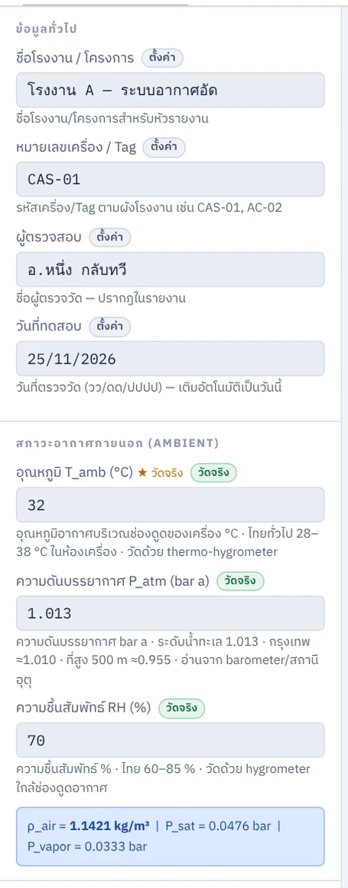
1
2
3
4
5
6
1
ชื่อโรงงาน/โครงการ — ขึ้นหัวรายงานตอนพิมพ์
2
หมายเลขเครื่อง ตามผังโรงงาน เช่น CAS-01
3
วันที่ตรวจ — เครื่องมือเติมวันนี้ให้ แก้ได้
4
อุณหภูมิอากาศรอบช่องดูดของเครื่อง (°C) — วัดจริง
5
ความดันบรรยากาศ — ใกล้ระดับน้ำทะเลใช้ 1.013
6
ความชื้นสัมพัทธ์ (%) — วัดจริง
กล่องสีฟ้าใต้ช่อง ⑥ แสดงความหนาแน่นอากาศทันทีที่แก้ค่า — อากาศร้อน/ชื้นจะเบาบางลง
วัดใกล้ช่องดูดของเครื่อง ไม่ใช่กลางแจ้ง — ห้องเครื่องมักร้อนกว่าข้างนอก
ขั้นที่ 2
แถบซ้าย: ข้อมูลเครื่องอัดอากาศ
คู่มือใช้งาน · ระบบอากาศอัด (Compressed Air System Tool) · ระดับ Free
8 / 35
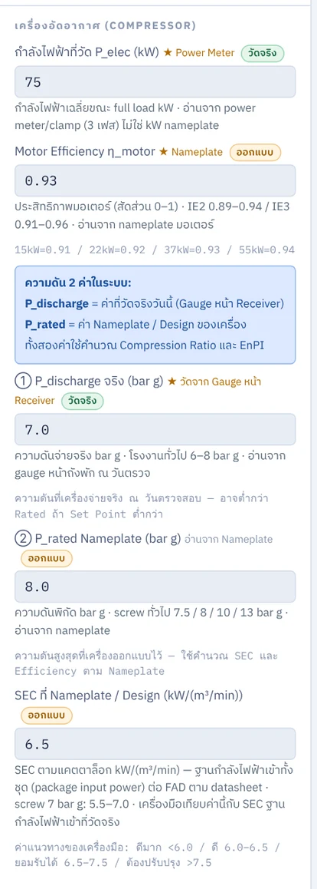
1
2
3
4
5
1
กำลังไฟฟ้าที่วัดได้ ขณะ Load เต็ม (kW) — ใช้ power meter ไม่ใช่ kW บนป้าย
2
ประสิทธิภาพมอเตอร์ (0–1) จากป้ายมอเตอร์ เช่น 0.93
3
ความดันจ่ายจริงวันนี้ (bar g) จากเกจหน้าถังพักลม
4
ความดันพิกัดบนป้ายเครื่อง (bar g) — เพดานที่เครื่องทำได้
5
SEC บนป้าย/แคตตาล็อก — ใช้เป็นค่าเทียบว่าเครื่องเสื่อมไปแค่ไหน
ช่อง ③ กับ ④ คนละความหมาย: ③ = วัดวันนี้ · ④ = ป้ายเครื่อง — อย่าสลับ
ไม่มีค่า SEC บนป้าย: ใช้ kW พิกัด ÷ FAD พิกัดจากแคตตาล็อกรุ่นเดียวกัน
ขั้นที่ 3
แท็บ Air Properties: อากาศวันนี้ต่างจากสภาวะอ้างอิงแค่ไหน
คู่มือใช้งาน · ระบบอากาศอัด (Compressed Air System Tool) · ระดับ Free
9 / 35
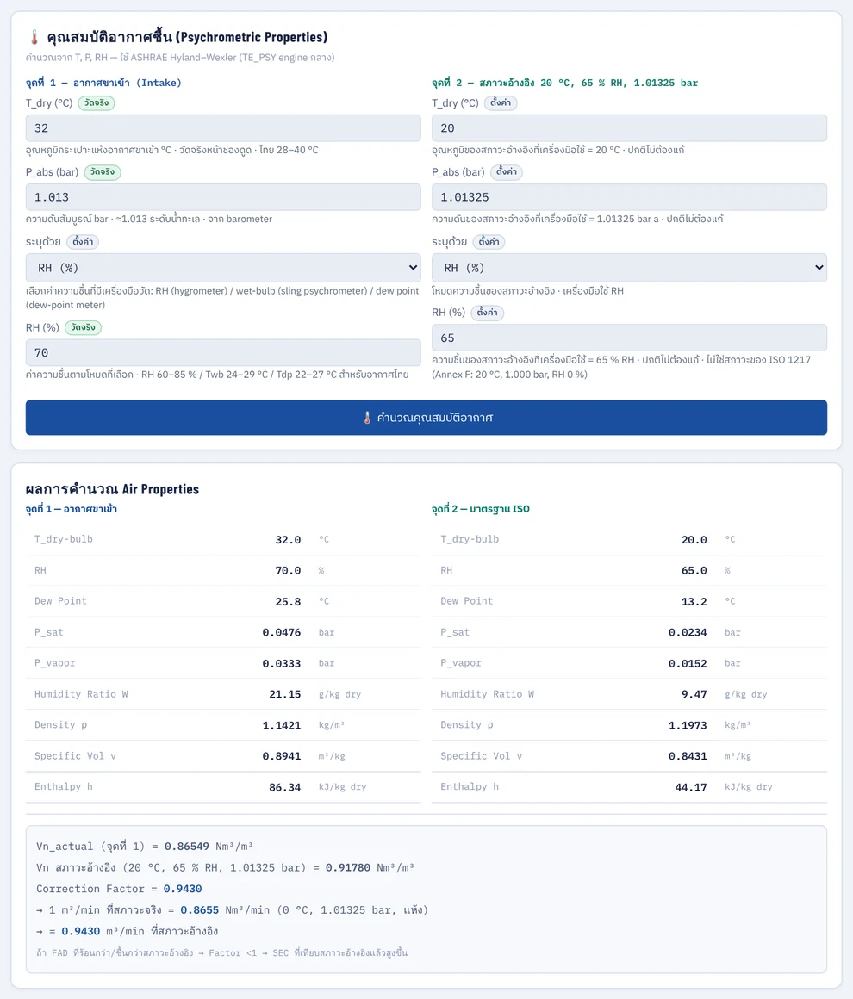
1
2
3
4
5
6
7
1
อุณหภูมิอากาศขาเข้า (°C) — ค่าเดียวกับแถบซ้าย
2
เลือกวิธีบอกความชื้น: RH / กระเปาะเปียก / จุดน้ำค้าง ตามเครื่องวัดที่มี
3
ค่าความชื้นตามวิธีที่เลือก
4
จุดที่ 2 = สภาวะอ้างอิง 20 °C · 65 % — ไม่ต้องแก้
5
กด คำนวณคุณสมบัติอากาศ
6
ตารางคุณสมบัติอากาศ 2 จุด เทียบกัน
7
Correction Factor = 0.9430 — ตัวคูณแปลงลมวันนี้เป็นสภาวะอ้างอิง
จุดน้ำค้าง 25.8 °C · ไอน้ำ 21.15 g ต่ออากาศแห้ง 1 kg — น้ำนี้จะกลั่นตัวในถังและท่อ ต้องมี drain
ความหนาแน่น 1.1421 kg/m³ เทียบอ้างอิง 1.1973 — อากาศร้อนชื้นเบาบางกว่า ลม 1 m³ จึงมีเนื้ออากาศน้อยกว่า
อ่านกราฟ P-V: อัดอากาศแบบไหนกินไฟน้อยสุด
คู่มือใช้งาน · ระบบอากาศอัด (Compressed Air System Tool) · ระดับ Free
10 / 35
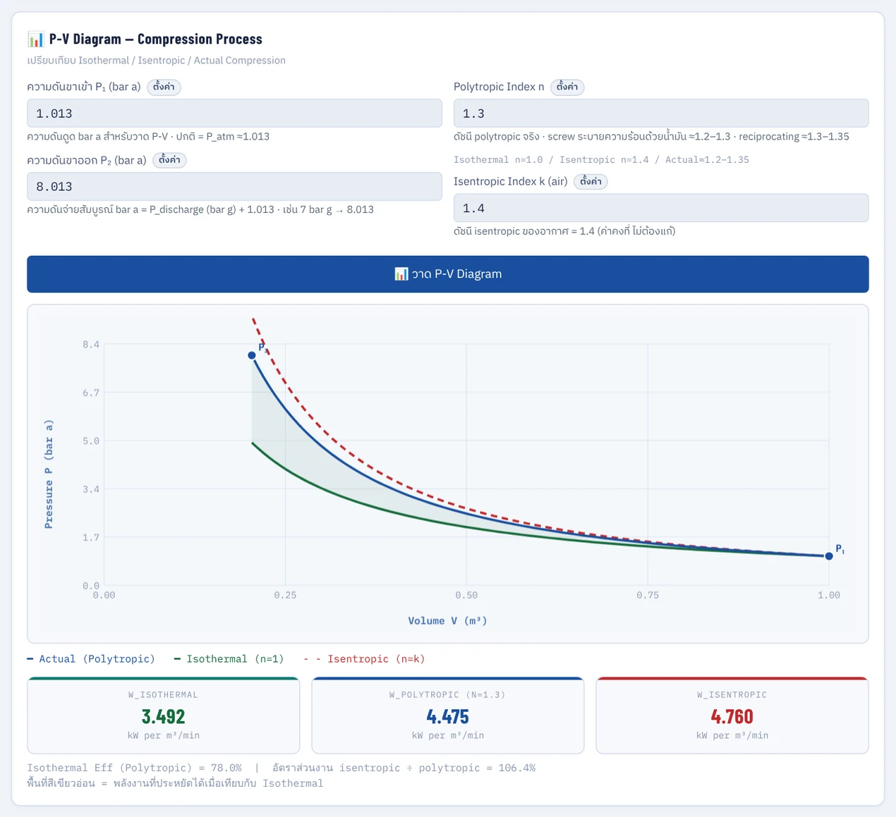
1
2
3
4
1
ความดันจ่ายสัมบูรณ์ = เกจ + 1.013 (7 bar g → 8.013)
2
ดัชนี n ของการอัดจริง — สกรูฉีดน้ำมันใช้ราว 1.2–1.3
3
เส้นเขียว = อัดแบบอุณหภูมิคงที่ (ทฤษฎี ดีสุด) · เส้นน้ำเงิน = จริง · เส้นประแดง = ไม่ระบายความร้อนเลย
4
งานอัดต่อลม 1 m³/min ของแต่ละแบบ
อุณหภูมิคงที่ 3.492 · จริง 4.475 · ไม่ระบายความร้อน 4.760 kW ต่อ m³/min
พื้นที่สีเขียวอ่อน = ไฟที่เสียเพิ่มเพราะอากาศร้อนขึ้นระหว่างอัด — ระบายความร้อนดี เส้นน้ำเงินจะเข้าใกล้เส้นเขียว
💡 เคล็ดลับ
ส่วนนี้ใช้อธิบายหลักการให้ลูกค้าเห็นภาพ — ไม่ต้องกรอกเพิ่ม กด "วาด P-V Diagram" ได้เลย
ขั้นที่ 4
แท็บ Performance: หา FAD ด้วย Pump-Up Test
คู่มือใช้งาน · ระบบอากาศอัด (Compressed Air System Tool) · ระดับ Free
11 / 35
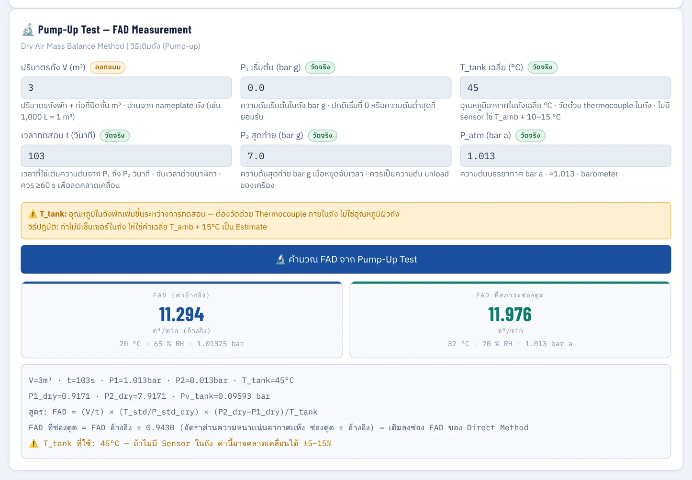
1
2
3
4
5
6
7
1
ปริมาตรถังพัก + ท่อที่ปิดกั้นไว้ (m³) — 1,000 ลิตร = 1 m³
2
เวลาที่อัดจาก P₁ ถึง P₂ (วินาที) — ควร 60 วินาทีขึ้นไป
3
ความดันเริ่มต้น (bar g) — ระบายถังจนเหลือ 0
4
ความดันสุดท้าย (bar g) — หยุดจับเวลาที่ค่านี้
5
อุณหภูมิอากาศในถังเฉลี่ย (°C) — ไม่มีเซนเซอร์ใช้ อุณหภูมิห้อง + 10–15
6
กด คำนวณ FAD จาก Pump-Up Test
7
ได้ FAD ที่ช่องดูด 11.976 m³/min — เครื่องมือเติมลงช่อง FAD ด้านบนให้เอง
วิธีทำ: ปิดวาล์วทางออกถัง → ระบายถัง → เดินเครื่อง Load เต็ม → จับเวลาจนถึง P₂
มี flow meter ที่ท่อจ่ายอยู่แล้ว ข้ามขั้นนี้ แล้วกรอก FAD ในขั้นที่ 5 ได้เลย
ขั้นที่ 5
คำนวณสมรรถนะ (Direct Method)
คู่มือใช้งาน · ระบบอากาศอัด (Compressed Air System Tool) · ระดับ Free
12 / 35
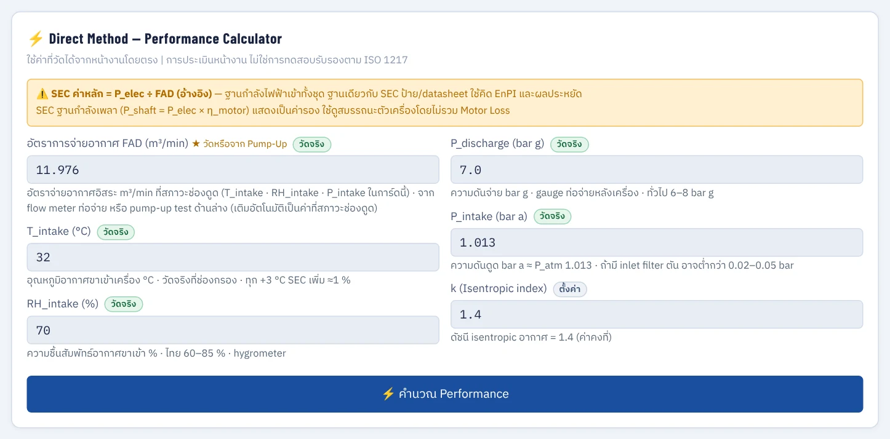
1
2
3
4
5
6
1
FAD (m³/min ที่ช่องดูด) — มาจากขั้นที่ 4 หรือ flow meter
2
อุณหภูมิอากาศขาเข้าตอนทดสอบ (°C)
3
ความชื้นสัมพัทธ์ขาเข้าตอนทดสอบ (%)
4
ความดันจ่าย (bar g) ตอนทดสอบ
5
ความดันดูด (bar a) — ปกติเท่าความดันบรรยากาศ
6
กด คำนวณ Performance
กำลังไฟฟ้าและประสิทธิภาพมอเตอร์ เครื่องมือดึงจากแถบซ้าย (ขั้นที่ 2) — ไม่ต้องกรอกซ้ำ
กล่องเหลืองด้านบนบอกว่า SEC ตัวหลักคิดจาก กำลังไฟฟ้าเข้า ฐานเดียวกับค่าบนป้ายเครื่อง
อ่านผล 4 ตัวเลขหลัก
คู่มือใช้งาน · ระบบอากาศอัด (Compressed Air System Tool) · ระดับ Free
13 / 35
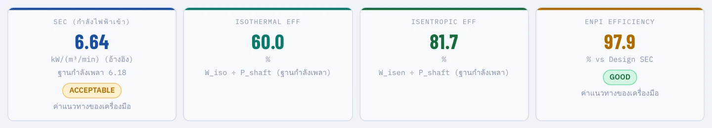
1
2
3
4
1
SEC = 6.64 kW/(m³/min) → ACCEPTABLE · ใช้ไฟ 6.64 kW ต่อลม 1 m³/min (เทียบสภาวะอ้างอิง)
2
Isothermal Eff 60.0 % — เทียบกับการอัดในอุดมคติ
3
Isentropic Eff 81.7 % — เทียบกับการอัดแบบไม่ระบายความร้อน
4
EnPI Efficiency 97.9 % → GOOD · SEC ป้าย ÷ SEC วัดจริง — 100 % = ดีเท่าเครื่องใหม่
แนวทางของเครื่องมือ (สกรู ~7 bar): SEC < 6.0 ดีมาก · 6.0–6.5 ดี · 6.5–7.5 พอรับได้ · > 7.5 ต้องแก้
โรงงาน A: SEC สูงกว่าป้าย (6.50) เล็กน้อย — เครื่องยังอยู่ในสภาพใช้ได้
💡 เคล็ดลับ
รายงานให้เขียนครบ: "SEC 6.64 kW/(m³/min) ฐานกำลังไฟฟ้าเข้า ที่ความดัน 7.0 bar g" — ไม่บอกความดัน เทียบกันไม่ได้
ตารางรายละเอียด: ตัวเลขมาจากไหน
คู่มือใช้งาน · ระบบอากาศอัด (Compressed Air System Tool) · ระดับ Free
14 / 35
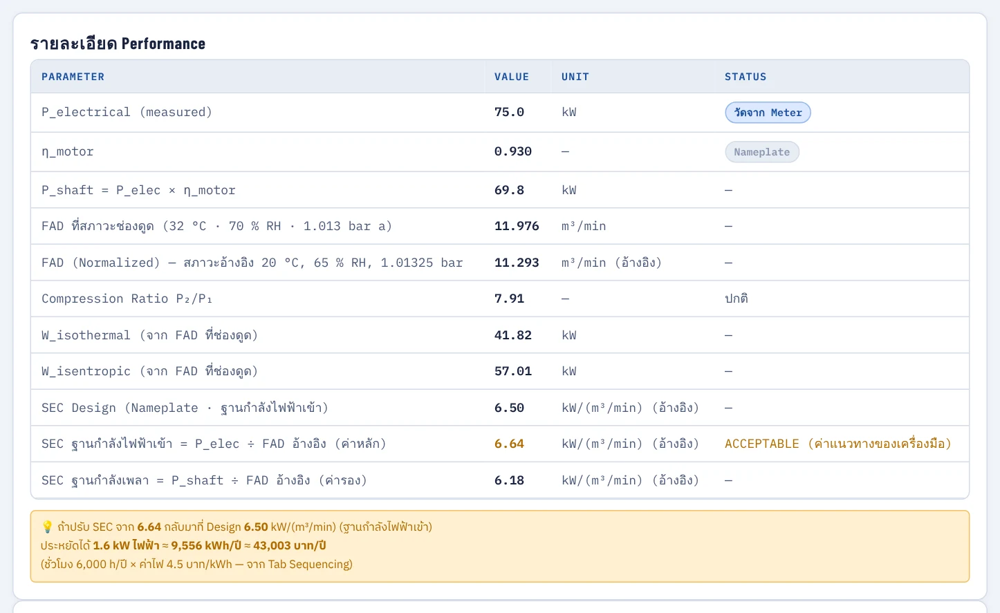
1
2
3
4
5
1
กำลังไฟฟ้าที่วัด 75.0 kW (จากแถบซ้าย)
2
FAD ที่ช่องดูด 11.976 m³/min — ค่าที่กรอก
3
FAD เทียบสภาวะอ้างอิง 11.293 m³/min = FAD ช่องดูด × 0.9430
4
SEC = 75.0 ÷ 11.293 = 6.64 — ค่าหลักที่ใช้รายงาน
5
ถ้าทำให้ SEC กลับไปเท่าป้าย: ลดได้ 1.6 kW ≈ 43,003 บาท/ปี
อัตราส่วนความดัน 7.91 — สกรูชั้นเดียวปกติไม่เกินราว 8–10
ชั่วโมงทำงานและค่าไฟในกล่องเหลือง ดึงจากส่วน Sequencing (ขั้นที่ 6) — แก้ที่นั่น
ลองเปลี่ยนค่า (What-if): อะไรทำให้ SEC แย่ลง
คู่มือใช้งาน · ระบบอากาศอัด (Compressed Air System Tool) · ระดับ Free
15 / 35
| กรณี | SEC | สถานะ | EnPI (%) | เงินที่เสียเทียบป้าย (บาท/ปี) |
|---|---|---|---|---|
| โรงงาน A: 75 kW · อากาศเข้า 32 °C | 6.64 | ACCEPTABLE | 97.9 | 43,003 |
| เครื่องเสื่อม: ลมเท่าเดิม แต่กินไฟ 88 kW | 7.79 | POOR | 83.4 | 394,003 |
| ห้องเครื่องร้อน: อากาศเข้า 40 °C | 6.95 | ACCEPTABLE | 93.6 | 129,861 |
ทำเอง: แก้ค่า → กด คำนวณ Performance → จดผล → แก้กลับเป็นค่าเดิม
กินไฟเพิ่มโดยลมเท่าเดิม = สัญญาณไส้กรองตัน · ชุดสกรูสึก · น้ำมัน/คูลเลอร์สกปรก
อากาศเข้าร้อนขึ้น 8 °C SEC แย่ลงชัดเจน — ต่อท่อดูดอากาศเย็นจากนอกห้อง เป็นมาตรการต้นทุนต่ำ
ขั้นที่ 6
หลายเครื่อง: กรอกตาราง Sequencing
คู่มือใช้งาน · ระบบอากาศอัด (Compressed Air System Tool) · ระดับ Free
16 / 35
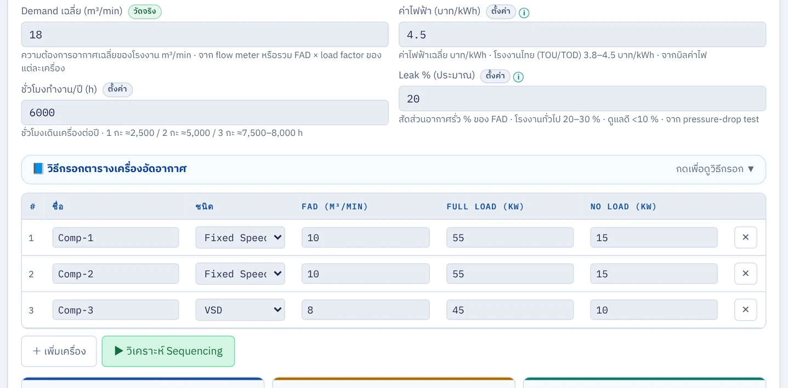
1
2
3
4
5
6
7
1
ความต้องการลมเฉลี่ยของโรงงาน (m³/min) รวมที่รั่ว
2
ชั่วโมงทำงานต่อปี — ใช้คิดเงินทุกแท็บ
3
ค่าไฟฟ้าเฉลี่ย (บาท/kWh) จากบิลค่าไฟ
4
ลมรั่วโดยประมาณ (%) — ยังไม่ได้ทดสอบ ใช้ 20 ไปก่อน
5
กดแถบนี้เพื่อเปิดวิธีกรอกตาราง
6
ตารางเครื่อง: ชื่อ · ชนิด (Fixed / VSD) · FAD · kW ขณะ Load · kW ขณะ Unload
7
กด วิเคราะห์ Sequencing
ลำดับแถว = ลำดับเดินเครื่อง แถวบนสุดเดินก่อนและเดินเต็ม — เรียงตามที่โรงงานเดินจริง
ตัวอย่างในเครื่องมือ: ห้องเครื่อง 3 ตัว (55 + 55 kW ความเร็วคงที่ และ 45 kW แบบ VSD)
อ่านผล Sequencing และกราฟ 2 รูป
คู่มือใช้งาน · ระบบอากาศอัด (Compressed Air System Tool) · ระดับ Free
17 / 35
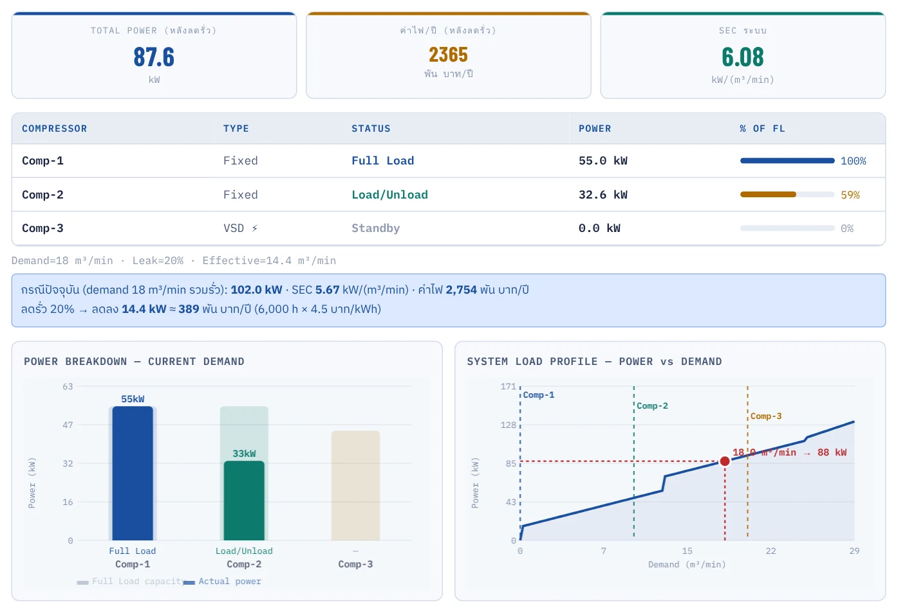
1
2
3
4
5
1
หลังลดรั่ว: กำลังรวม 87.6 kW · ค่าไฟ 2365 พันบาท/ปี · SEC ระบบ 6.08
2
สถานะรายเครื่อง: Comp-2 Load/Unload กิน 32.6 kW · Comp-3 Standby
3
ปัจจุบัน (รวมรั่ว) 102.0 kW → ลดรั่วแล้วลดลง 14.4 kW ≈ 389 พันบาท/ปี
4
กราฟแท่ง: แท่งจาง = กำลังเต็มพิกัด · แท่งเข้ม = กำลังที่ใช้จริงของแต่ละเครื่อง
5
กราฟเส้น: กำลังรวมเมื่อความต้องการลมเปลี่ยน · จุดแดง = จุดทำงานปัจจุบัน
เครื่องที่ขึ้น Load/Unload คือเครื่องที่เสียไฟช่วง Unload — เป้าหมายคือให้มีเครื่องแบบนี้น้อยที่สุด
กราฟเส้นช่วงที่ชันน้อย = เครื่อง VSD กำลังปรับรอบตามโหลด
ลองเปลี่ยนค่า (What-if): ย้ายเครื่อง VSD ขึ้นมาเป็นตัวรับโหลดแกว่ง
คู่มือใช้งาน · ระบบอากาศอัด (Compressed Air System Tool) · ระดับ Free
18 / 35
| ลำดับเดินเครื่อง | เครื่องลำดับที่ 2 | kW รวม (หลังลดรั่ว) | ค่าไฟ (พันบาท/ปี) | SEC ระบบ |
|---|---|---|---|---|
| เดิม: Fixed → Fixed → VSD | Load/Unload 32.6 kW | 87.6 | 2365 | 6.08 |
| ใหม่: Fixed → VSD → Fixed | Modulating 26.1 kW | 81.1 | 2190 | 5.63 |
ทำเอง: แก้แถวที่ 2 เป็น VSD (FAD 8 · 45 kW · Unload 10 kW) และแถวที่ 3 เป็น Fixed (10 · 55 · 15) แล้วกดวิเคราะห์
หลักคิด: ให้เครื่องความเร็วคงที่เดินเต็มเป็นฐาน แล้วให้ VSD รับส่วนที่แกว่ง — ไม่มีเครื่องไหนต้อง Unload
ผลนี้เป็นการจำลองอย่างง่ายจากค่าที่กรอก — ก่อนเสนอลูกค้าให้ยืนยันด้วยการวัด kW จริงของแต่ละเครื่อง
ขั้นที่ 7
แท็บ Fault & Leakage: รูรั่ว 1 รู เสียเงินเท่าไร
คู่มือใช้งาน · ระบบอากาศอัด (Compressed Air System Tool) · ระดับ Free
19 / 35
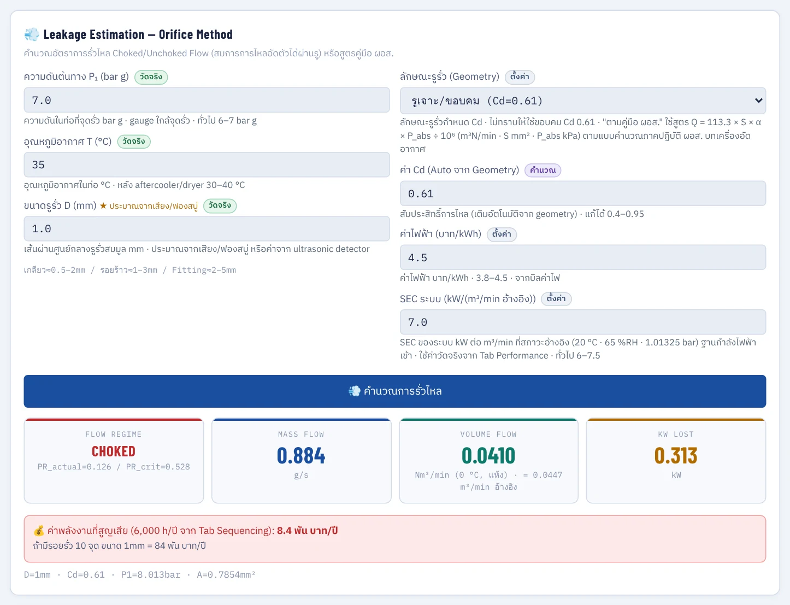
1
2
3
4
5
6
1
ความดันในท่อตรงจุดรั่ว (bar g)
2
ขนาดรูรั่ว (mm) — ประมาณจากเสียง/ฟองสบู่ หรือเครื่องตรวจอัลตราโซนิก
3
ลักษณะรู — ไม่แน่ใจเลือก "รูเจาะ/ขอบคม"
4
SEC ของระบบ — ใช้ค่าจากขั้นที่ 5
5
กด คำนวณการรั่วไหล
6
รู 1 mm รั่ว 0.0447 m³/min = 0.313 kW = 8.4 พันบาท/ปี
คำว่า CHOKED แปลว่าลมพุ่งออกด้วยความเร็วเสียง — เป็นปกติเมื่อความดันในท่อสูงกว่าบรรยากาศเกิน ~2 เท่า
ใช้ส่วนนี้ตอนเดินสำรวจรอยรั่วทีละจุด เพื่อบอกลูกค้าว่าจุดไหนควรซ่อมก่อน
ขั้นที่ 8
ทดสอบลมรั่วทั้งระบบ (Pressure Decay)
คู่มือใช้งาน · ระบบอากาศอัด (Compressed Air System Tool) · ระดับ Free
20 / 35
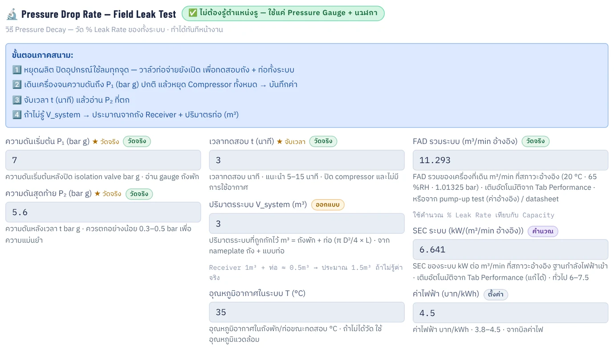
1
2
3
4
5
6
7
1
ขั้นตอนหน้างาน 4 ข้อ — อ่านก่อนทำทุกครั้ง
2
P₁ ความดันตอนเริ่มจับเวลา (bar g)
3
P₂ ความดันตอนหยุดจับเวลา (bar g)
4
เวลาที่จับได้ (นาที)
5
ปริมาตรระบบ = ถังพัก + ท่อ (m³) — ค่านี้ผิด ผลผิดตามสัดส่วน
6
FAD รวมของระบบ — เครื่องมือเติมจากขั้นที่ 5
7
SEC ระบบ — เครื่องมือเติมจากขั้นที่ 5
ทำตอนหยุดผลิต ปิดอุปกรณ์ใช้ลมทุกตัว แล้วหยุดเครื่องอัดอากาศ — ลมที่หายไปคือลมรั่วล้วน ๆ
ส่วนนี้ไม่มีปุ่มคำนวณ — ผลเปลี่ยนทันทีที่พิมพ์
อ่านผลทดสอบลมรั่ว
คู่มือใช้งาน · ระบบอากาศอัด (Compressed Air System Tool) · ระดับ Free
21 / 35
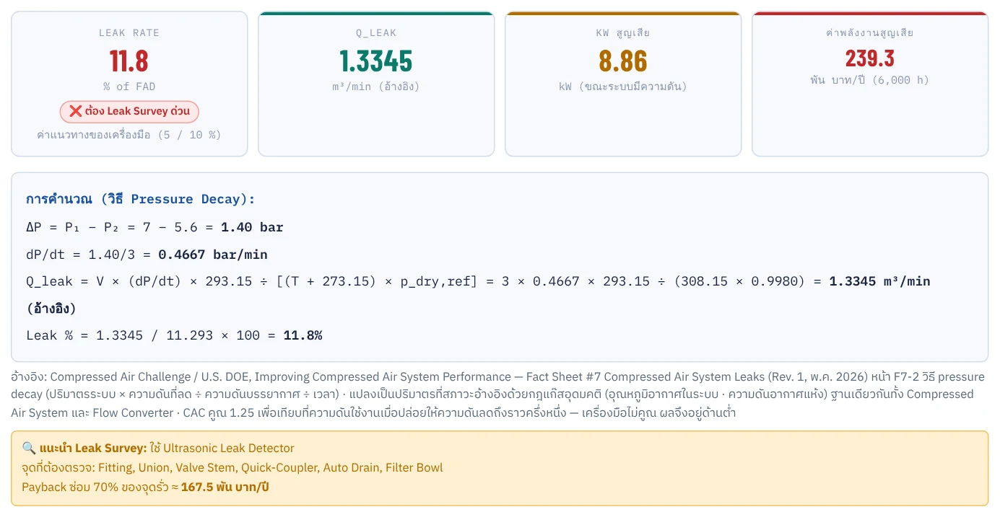
1
2
3
4
5
6
1
Leak Rate 11.8 % ของลมที่ผลิต → ❌ ต้อง Leak Survey ด่วน
2
ลมรั่ว 1.3345 m³/min (เทียบสภาวะอ้างอิง)
3
กำลังไฟฟ้าที่เสียไปกับลมรั่ว 8.86 kW
4
239.3 พันบาท/ปี ที่ 6,000 ชั่วโมง
5
วิธีคิดทีละบรรทัด — ความดันตก 0.4667 bar/นาที
6
คำแนะนำ: ซ่อม 70 % ของจุดรั่ว ประหยัด ≈ 167.5 พันบาท/ปี
แนวทางของเครื่องมือ: < 5 % ดีมาก · 5–10 % พอรับได้ · > 10 % ต้องสำรวจและซ่อมรอยรั่ว
ค่า % นี้ถูกส่งไปแท็บ Field Audit ให้อัตโนมัติ (ขั้นที่ 12)
ลองเปลี่ยนค่า (What-if): รูใหญ่ขึ้น และหลังซ่อมรั่ว
คู่มือใช้งาน · ระบบอากาศอัด (Compressed Air System Tool) · ระดับ Free
22 / 35
| กรณี | ลมรั่ว (m³/min) | kW ที่เสีย | พันบาท/ปี | สถานะ |
|---|---|---|---|---|
| รูรั่ว 1 mm 1 รู (ขั้นที่ 7) | 0.0447 | 0.313 | 8.4 | — |
| รูรั่ว 3 mm 1 รู | 0.4022 | 2.815 | 76.0 | — |
| ทั้งระบบ ก่อนซ่อม: 7.0 → 5.6 bar ใน 3 นาที | 1.3345 | 8.86 | 239.3 | 11.8 % ❌ ต้อง Leak Survey ด่วน |
| ทั้งระบบ หลังซ่อม: 7.0 → 6.5 bar ใน 3 นาที | 0.4766 | 3.17 | 85.5 | 4.2 % ✅ ดีมาก |
รูโต 3 เท่า ลมรั่วเพิ่ม 9 เท่า (ตามพื้นที่รู) — รูใหญ่ต้องซ่อมก่อนเสมอ
ทดสอบซ้ำหลังซ่อมด้วยวิธีเดิม เวลาเดิม — ใช้ตัวเลขก่อน/หลังยืนยันผลประหยัดกับลูกค้า
ขั้นที่ 9
ท่อเล็กไปไหม: Pressure Drop ในท่อ
คู่มือใช้งาน · ระบบอากาศอัด (Compressed Air System Tool) · ระดับ Free
23 / 35
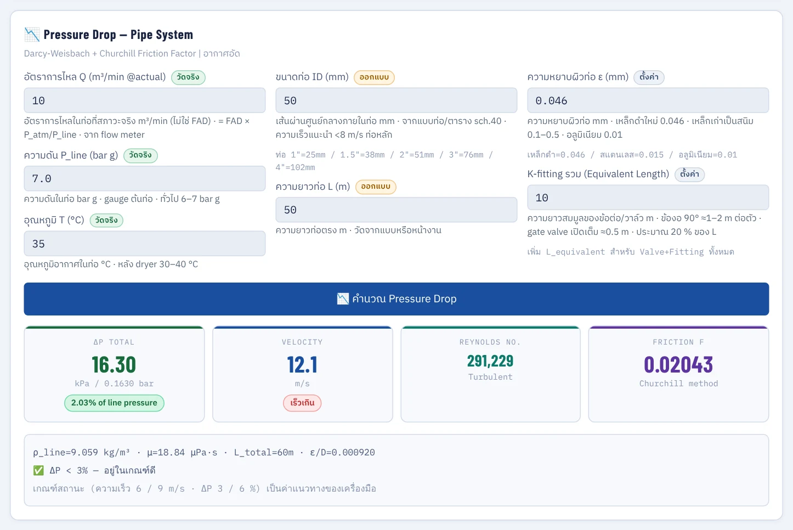
1
2
3
4
5
6
1
อัตราไหลในท่อช่วงนั้น (m³/min)
2
ขนาดท่อ เส้นผ่านศูนย์กลางใน (mm)
3
ความยาวท่อ (m)
4
ความยาวเทียบเท่าของข้องอ/วาล์ว (m) — ไม่ทราบใช้ ~20 % ของความยาวท่อ
5
กด คำนวณ Pressure Drop
6
ความดันตก 0.1630 bar (2.03 %) · ความเร็ว 12.1 m/s → เร็วเกิน
ลองเปลี่ยนท่อเป็น 80 mm: ความเร็วเหลือ 4.7 m/s · ความดันตกเหลือ 0.0148 bar
แนวทางของเครื่องมือ: ความเร็วไม่ควรเกิน 6 m/s (เกิน 9 = เร็วเกิน) · ความดันตกไม่ควรเกิน 3 % ของความดันในท่อ
ขั้นที่ 10
ความดันตกตรงไหน: System Pressure Map
คู่มือใช้งาน · ระบบอากาศอัด (Compressed Air System Tool) · ระดับ Free
24 / 35
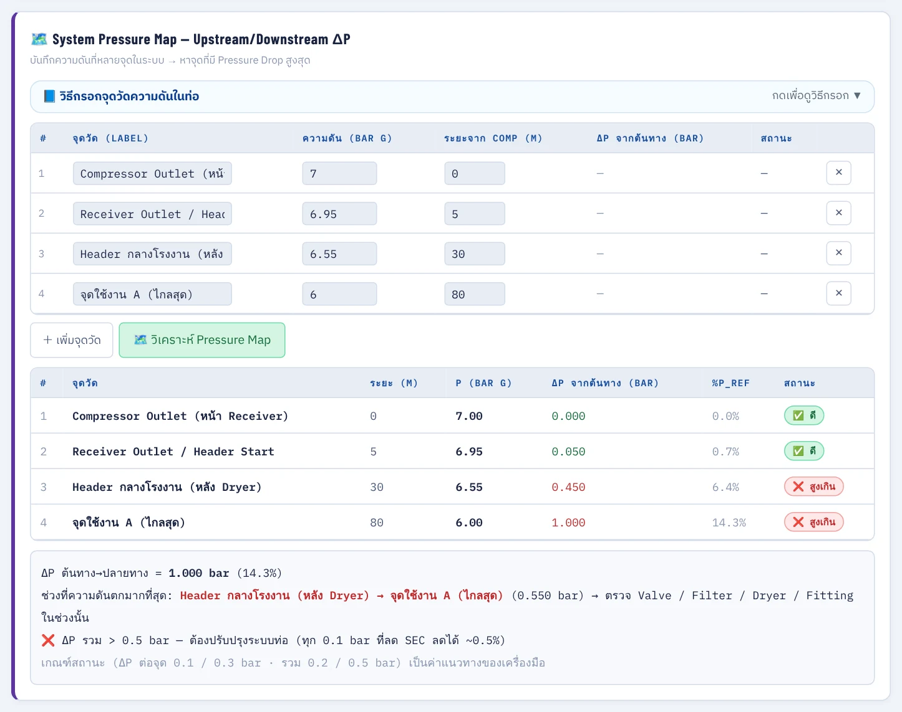
1
2
3
4
5
1
กดแถบนี้เพื่อเปิดวิธีกรอกจุดวัด
2
จุดแรก = ทางออกเครื่อง — ชื่อจุด · ความดัน (bar g) · ระยะจากเครื่อง (m)
3
จุดสุดท้าย = จุดใช้งานที่ไกลที่สุด
4
กด วิเคราะห์ Pressure Map
5
ความดันตกสะสมรายจุด — ต้นทางถึงปลายทาง 1.000 bar (14.3 %) และช่วงที่ตกมากที่สุด
โรงงาน A: ช่วงที่ตกมากที่สุดคือ Header กลางโรงงาน (หลัง Dryer) → จุดใช้งาน A (ไกลสุด) (0.550 bar) · รองลงมาคือช่วงที่มี dryer และไส้กรอง (6.95 → 6.55 bar) — ตรวจสองช่วงนี้ก่อน
ใช้เกจตัวเดียวกันวัดไล่ทุกจุด ขณะโรงงานใช้ลมปกติ — เกจคนละตัวคลาดเคลื่อนไม่เท่ากัน
ขั้นที่ 11
เครื่องมีอาการ: Fault Diagnosis Tree
คู่มือใช้งาน · ระบบอากาศอัด (Compressed Air System Tool) · ระดับ Free
25 / 35
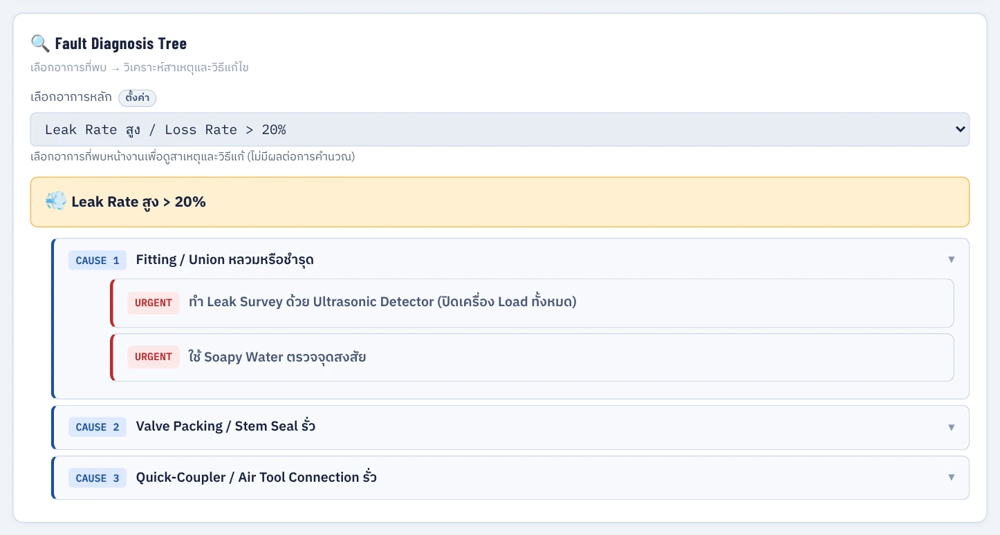
1
2
3
1
เลือกอาการหลักที่พบ — มี 8 อาการ
2
กดที่แถบ CAUSE เพื่อเปิดดูสิ่งที่ต้องทำของสาเหตุนั้น
3
สาเหตุถัดไป — เรียงจากที่พบบ่อยและตรวจง่ายก่อน
อาการที่เลือกได้: SEC สูง · อุณหภูมิจ่ายสูง · ความดันต่ำ · ลมรั่วมาก · Unload บ่อย · ความชื้นสูง · สั่น/เสียงดัง · น้ำมันปนในลม
ป้าย URGENT = ทำทันที · ACTION = ทำตามแผนซ่อมบำรุง
ส่วนนี้เป็นรายการช่วยไล่ตรวจ ไม่มีการคำนวณ
⚠️ ระวัง
งานที่ต้องเปิดฝาเครื่องหรือถอดชิ้นส่วน ให้ช่างผู้รับผิดชอบเครื่องเป็นคนทำ หลังตัดไฟและระบายความดันแล้วเท่านั้น
ขั้นที่ 12
แท็บ Field Audit: รวมผลทั้งหมดไว้หน้าเดียว
คู่มือใช้งาน · ระบบอากาศอัด (Compressed Air System Tool) · ระดับ Free
26 / 35
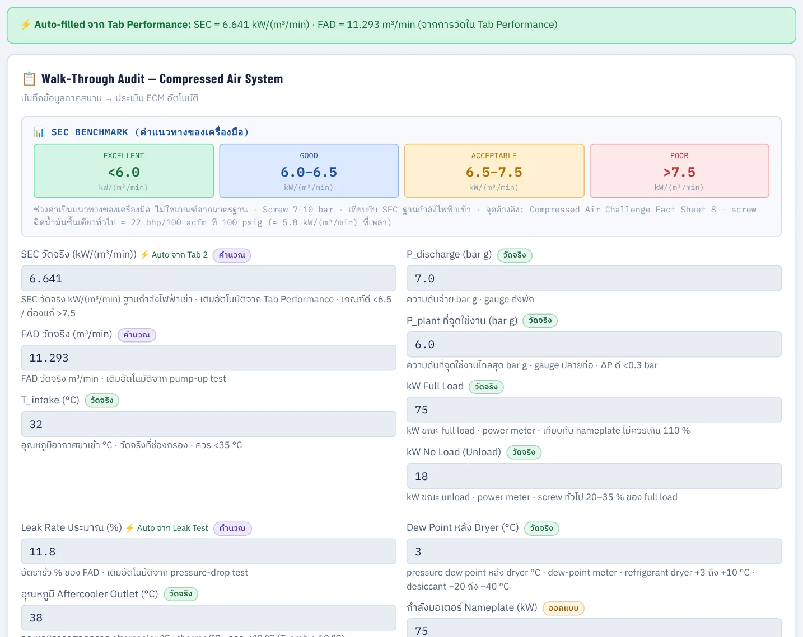
1
2
3
4
5
6
7
1
แถบเขียว = เครื่องมือดึง SEC และ FAD จากแท็บ Performance มาให้แล้ว
2
SEC วัดจริง 6.641 — เติมอัตโนมัติ
3
Leak Rate 11.8 % — เติมอัตโนมัติจากขั้นที่ 8
4
ความดันที่จุดใช้งานไกลสุด (bar g) — จากขั้นที่ 10
5
kW ขณะ Unload — วัดด้วย power meter ตอนเครื่องไม่จ่ายลม
6
อุณหภูมิลมหลัง aftercooler (°C) — ควรต่ำกว่า 40
7
จุดน้ำค้างหลัง dryer (°C) — จากหน้าจอ dryer
ช่องที่เติมอัตโนมัติจะเปลี่ยนตามผลล่าสุด — ถ้าพิมพ์ทับเอง เครื่องมือจะคงค่าที่พิมพ์ไว้
เลื่อนลงมีช่องราคาเชื้อเพลิง (บาท/MJ) และประสิทธิภาพเครื่องทำความร้อนเดิม — ใช้คิดมาตรการนำความร้อนทิ้งกลับมาใช้
รายการตรวจ 35 ข้อ (Inspection Checklist)
คู่มือใช้งาน · ระบบอากาศอัด (Compressed Air System Tool) · ระดับ Free
27 / 35
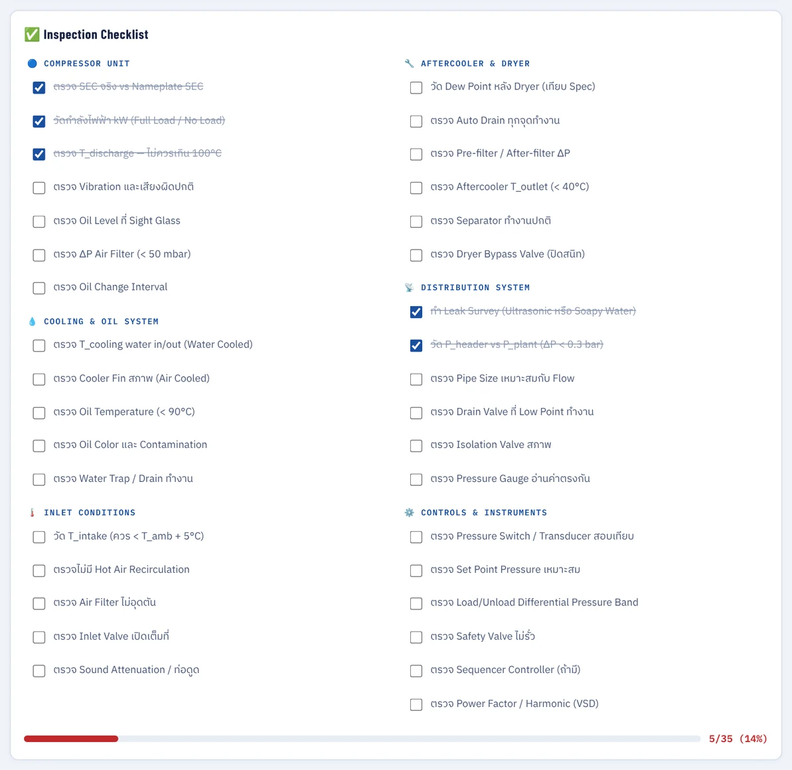
1
2
3
1
คลิกที่ข้อความเพื่อติ๊กว่าตรวจแล้ว — คลิกซ้ำเพื่อยกเลิก
2
แบ่ง 6 หมวด: ตัวเครื่อง · ระบายความร้อน/น้ำมัน · อากาศขาเข้า · aftercooler/dryer · ท่อจ่าย · ระบบควบคุม
3
แถบความคืบหน้า — เคสตัวอย่างตรวจแล้ว 5/35 ข้อ
ในวงเล็บท้ายบางข้อมีค่าที่ควรได้ เช่น อุณหภูมิน้ำมัน < 90 °C · ΔP ไส้กรองอากาศ < 50 mbar
ใช้เป็นรายการเดินตรวจหน้างาน — ติ๊กบนมือถือขณะเดิน แล้วพิมพ์แนบรายงาน
ECM Priority Matrix: ทำมาตรการไหนก่อน
คู่มือใช้งาน · ระบบอากาศอัด (Compressed Air System Tool) · ระดับ Free
28 / 35
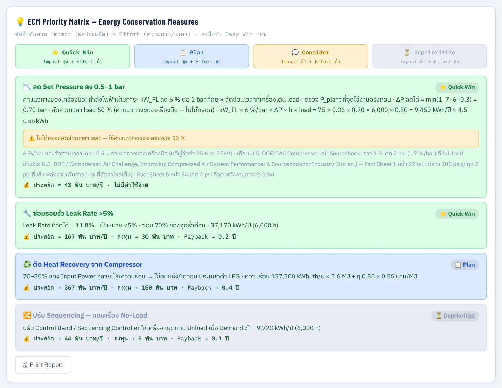
1
2
3
4
5
1
ลดความดันตั้ง 0.70 bar → 28 พันบาท/ปี · ไม่ต้องลงทุน
2
ซ่อมรอยรั่ว → 167 พันบาท/ปี · ลงทุน ~30 พันบาท · คืนทุน 0.2 ปี
3
นำความร้อนทิ้งกลับมาใช้ → 367 พันบาท/ปี · ลงทุน ~150 พันบาท · คืนทุน 0.4 ปี
4
ปรับ Sequencing → 44 พันบาท/ปี
5
พิมพ์รายงานสรุป
สี่กลุ่ม: Quick Win ผลมาก ทำง่าย → ทำก่อน · Plan ผลมาก ต้องลงทุน · Consider ผลน้อย ทำง่าย · Deprioritize ทำทีหลัง
มาตรการจะขึ้นเฉพาะที่เข้าเงื่อนไขจากค่าที่กรอก — เช่น ซ่อมรอยรั่วขึ้นเมื่อ Leak Rate เกิน 5 %
⚠️ ระวัง
เงินลงทุนเป็นค่าประมาณอย่างหยาบของเครื่องมือ — ก่อนเสนอลูกค้าต้องขอใบเสนอราคาจริง และตรวจว่าโรงงานมีจุดใช้ความร้อนจริงหรือไม่
Audit Summary: 4 ตัวเลขสรุประบบ
คู่มือใช้งาน · ระบบอากาศอัด (Compressed Air System Tool) · ระดับ Free
29 / 35
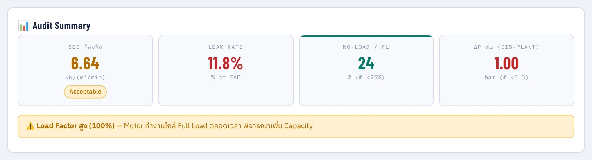
1
2
3
4
5
1
SEC วัดจริง 6.64 — Acceptable
2
Leak Rate 11.8 % — สีแดง = เกิน 10 %
3
kW ขณะ Unload ÷ kW ขณะ Load = 24 % (แนวทาง: ดี < 25 %)
4
ความดันตกจากเครื่องถึงจุดใช้งาน 1.00 bar (แนวทาง: ดี < 0.3)
5
ข้อความเตือนจากค่าที่กรอก
โรงงาน A สรุปได้: เครื่องยังดี (Acceptable) แต่ระบบท่อและรอยรั่วคือจุดเสียเงิน — แก้ที่ระบบก่อนคิดเปลี่ยนเครื่อง
คำเตือน Load Factor: kW ที่วัดได้ใกล้ kW พิกัดมอเตอร์ — ให้เทียบกระแสที่วัดกับกระแสพิกัดบนป้ายมอเตอร์ประกอบ
บันทึกงาน เปิดงานเดิม และส่งมาตรการ
คู่มือใช้งาน · ระบบอากาศอัด (Compressed Air System Tool) · ระดับ Free
30 / 35
1
2
3
4
5
1
Print — พิมพ์หน้าปัจจุบันเป็นกระดาษหรือ PDF
2
บันทึก JSON — เก็บค่าที่กรอกทั้งหมดเป็นไฟล์ 1 ไฟล์
3
โหลด JSON — เปิดไฟล์งานเดิมกลับมาทำต่อ
4
ส่งไป ECM Portfolio — ส่งมาตรการไปรวมกับเครื่องมืออื่น
5
คืนค่าตั้งต้น — ล้างทุกช่องกลับเป็นตัวอย่าง (บันทึก JSON ก่อนกด)
ตั้งชื่อไฟล์ให้ค้นง่าย เช่น โรงงานA_CAS-01_2569-11-16.json
เครื่องมือทำงานในเบราว์เซอร์ของคุณ — ปิดหน้าเว็บโดยไม่บันทึก ค่าที่กรอกอาจหาย
ไฟล์ JSON เปิดได้ทั้งบนคอมพิวเตอร์และมือถือ ส่งต่อให้เพื่อนร่วมทีมตรวจทานได้
ตัวช่วยในหน้าจอ
คู่มือใช้งาน · ระบบอากาศอัด (Compressed Air System Tool) · ระดับ Free
31 / 35
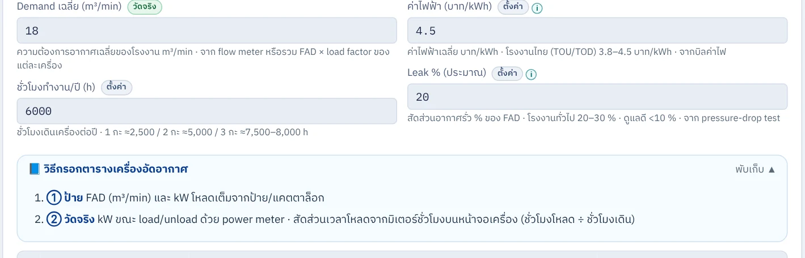
1
2
1
ปุ่ม ⓘ ข้างชื่อช่อง — กดเพื่อดูคำอธิบายเพิ่มของช่องนั้น
2
แถบ 📘 วิธีกรอก… — กดเพื่อกางขั้นตอนการกรอกตาราง กดซ้ำเพื่อพับเก็บ
ข้อความสีเทาใต้ทุกช่องบอกหน่วย · เครื่องมือวัด · ช่วงค่าปกติ — ค่าที่กรอกอยู่นอกช่วงให้ตรวจหน่วยก่อน
ช่องที่มีดาว ★ คือค่าที่มีผลต่อคำตอบมากที่สุด — วัดให้ดีที่สุดเท่าที่ทำได้
ทุกผลลัพธ์ที่มีป้ายสถานะ จะมีคำว่า "ค่าแนวทางของเครื่องมือ" กำกับ — ไม่ใช่เกณฑ์ตามมาตรฐาน
ข้อผิดพลาดที่พบบ่อย
คู่มือใช้งาน · ระบบอากาศอัด (Compressed Air System Tool) · ระดับ Free
32 / 35
✗ ใช้ kW บนป้ายแทน kW ที่วัด
✓ ช่องกำลังไฟฟ้าต้องเป็นค่าจาก power meter ขณะ Load เต็ม
✗ สลับ bar g กับ bar a
✓ เกจอ่านเป็น bar g · ช่องที่เขียน bar a ต้องบวก 1.013
✗ ปริมาตรถังไม่รวมท่อ
✓ Pump-Up และ Leak Test ใช้ปริมาตรถัง + ท่อที่ปิดกั้นไว้ทั้งหมด
✗ จับเวลาสั้นเกินไป
✓ Pump-Up ควรนาน 60 วินาทีขึ้นไป — สั้นกว่านี้คลาดเคลื่อนมาก
✗ ทดสอบรั่วตอนยังมีคนใช้ลม
✓ ต้องปิดอุปกรณ์ใช้ลมทุกตัว ไม่อย่างนั้น Leak Rate จะสูงเกินจริง
✗ ข้ามแท็บ Performance
✓ แท็บหลังใช้ SEC และ FAD จากขั้นที่ 5 — ไม่คำนวณก่อน = ใช้ค่าตัวอย่าง
✗ แก้ค่าแล้วไม่กดคำนวณ
✓ กดปุ่มสีน้ำเงินของส่วนนั้นทุกครั้งก่อนจดผล
✗ ไม่ตรวจค่าที่เติมอัตโนมัติ
✓ ก่อนพิมพ์รายงาน เทียบ SEC และ Leak Rate ในแท็บ Field Audit กับผลในแท็บก่อนหน้า
แบบฝึกหัด: โรงงาน B เครื่องอัดอากาศสกรู 37 kW
คู่มือใช้งาน · ระบบอากาศอัด (Compressed Air System Tool) · ระดับ Free
33 / 35
| ข้อมูล | ค่า |
|---|---|
| กำลังไฟฟ้าที่วัดได้ขณะ Load เต็ม | 38.5 kW |
| Pump-Up: ปริมาตรถัง + ท่อ | 2.0 m³ |
| Pump-Up: อัดจาก 0 ถึง 7.0 bar g ใช้เวลา | 160 วินาที |
| Leak Test: ความดัน 7.0 → 6.2 bar g ใช้เวลา | 5 นาที |
| Leak Test: ปริมาตรระบบ | 2.5 m³ |
| ค่าอื่นทั้งหมด | ใช้ค่าตั้งต้นของเครื่องมือ |
คำถาม — กรอกแล้วตอบ
1
FAD ที่ช่องดูด = ______ m³/min
2
SEC = ______ kW/(m³/min) สถานะ ______
3
Leak Rate = ______ % สถานะ ______
4
ลมรั่วเสียเงินปีละ ______ พันบาท
💡 เคล็ดลับ
กด "คืนค่าตั้งต้น" ก่อนเริ่ม → แถบซ้ายแก้ kW → แท็บ Performance (Pump-Up แล้วคำนวณ) → แท็บ Fault & Leakage
เฉลยแบบฝึกหัด โรงงาน B
คู่มือใช้งาน · ระบบอากาศอัด (Compressed Air System Tool) · ระดับ Free
34 / 35
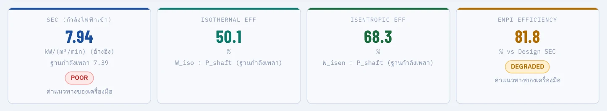
1) FAD ที่ช่องดูด = 5.140 m³/min (เทียบสภาวะอ้างอิง 4.847)
2) SEC = 38.5 ÷ 4.847 = 7.94 → POOR · EnPI 81.8 % — เครื่องกินไฟมากกว่าป้ายชัดเจน ควรตรวจไส้กรอง ชุดสกรู และคูลเลอร์
3) Leak Rate = 7.9 % → ⚠ ยอมรับได้ (ลมรั่ว 0.3813 m³/min)
4) ลมรั่วเสียเงินประมาณ 81.8 พันบาท/ปี ที่ 6,000 ชั่วโมง
✓ ผ่าน
ได้ตัวเลขตรงกัน = ใช้เครื่องมือเป็นแล้ว · โรงงาน B ต่างจาก A: ที่นี่ปัญหาหลักอยู่ที่ตัวเครื่อง
สรุป 1 หน้า (พิมพ์ติดไว้ข้างคอมพิวเตอร์)
คู่มือใช้งาน · ระบบอากาศอัด (Compressed Air System Tool) · ระดับ Free
35 / 35
1
แถบซ้าย
อุณหภูมิ · ความชื้น · kW ที่วัด · ความดันจ่าย · SEC ป้าย
2
Air Properties
กดคำนวณ → ได้ Correction Factor
3
Pump-Up Test
ปริมาตรถัง+ท่อ · เวลา · P₁→P₂ → ได้ FAD
4
คำนวณ Performance
อ่าน SEC · สถานะ · EnPI
5
Sequencing
ตารางเครื่องเรียงตามลำดับเดินจริง
6
Leak Test
P₁ · P₂ · เวลา · ปริมาตรระบบ → Leak %
7
Pressure Drop / Map
ขนาดท่อ · ความดันไล่ทีละจุด
8
Field Audit
kW Unload · ความดันจุดใช้งาน → ECM · บันทึก JSON
อ่านผลแล้วตรวจ
☐
SEC > 7.5 → ตรวจตัวเครื่อง
☐
Leak > 10 % → สำรวจและซ่อมรอยรั่ว
☐
ความดันตก > 0.5 bar → ตรวจท่อ/ไส้กรอง/dryer
☐
มีเครื่อง Load/Unload → จัดลำดับเดินเครื่องใหม่
อ.หนึ่ง กลับทวี / Aj. Nueng Klubtavee
tripleeenergytools.com
tripleeenergytools.com